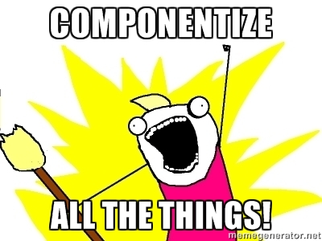

React.js and Flux
An introduction
Created by Johan Bergens / tretton37.com
About React
Javascript library for UI creation
The "V" in MVC
Created by Facebook to develop SPAs
React goals
"building large applications with data that changes over time"
More ideas
Use js
Single direction data flow
Make debugging easy
Compared to Angular
- Less things to learn
- Faster for most things
- Easier to combine with other js code
- Less features, not a framework
- Usable now (fall 2015) unlike Angular 2
Components
Components
Building block of React
Can be nested
Just renders data and executes view logic
Other logic can be placed in js classes
Usually has "html" in the components (JSX)
Some concepts for components
Components owns state
Data is sent as properties
- propTypes can declare the properties
If state or properties are changed the component rewrites itself
With Flux the main state is handled by a Store
Components (2)
React addons
Extra things that adds missing functionality
- JSX to make code easier to read
- Flux, Redux or Reflux for larger apps
- ReactRouter for app navigation
We'll get back to those
Demo - Simple-1
A component with state
More about components
Has some lifecycle functions
- - render()
- - componentWillMount()
- - componentDidMount()
- - componentWillUnmount ()
- - componentWillUpdate ()
- - shouldComponentUpdate()
State and external data
Flux
Pattern created by Facebook
Handles state and state changes for an application
Separate from the components but talks to them
Description of Flux
A Store handles top level logic and state
A Store responds to actions and changes its state
Components can call/create an action
Components can subcribe to a stores state changes
Flux

From Facebooks Flux web site
Flux

From Facebooks Flux web site
Async
Store methods are atomic
Async code usually lives in action creators
One action creator can create multiple actions
- findOrders, findOrdersDone, findOrderFailed
Demo - Core Insats
Made by Tekis
Uses Alt.js stores
No universal js yet
More about Flux
Many implementations of Flux
Flux from Facebook - the original
Alt.js - easy to use
Reflux - even easier but different
Fluxxor - an alternative
Fluxible from Yahoo - another
And some more
Flux alternatives
Redux - single store, functional
Baobab - similar to Redux
GraphQL - complete query language and api. Need a server
Falcor from Netflix - not really flux but has state
Still more
About Redux
Functional store
A single global store
- nested states
Reducer functions updates the state
Filters can take a part of the state
Some tips and tricks
Some tips and tricks
Use container components
- separate view from logic
- reusable components
Higher order components adds features
With ES5 there is mixins to add features
More tips and tricks
React likes immutable data
Can be used for performance optimization
See shouldComponentUpdate()
Other React features
React can be used on the server
Universal js or isomorphic js
ReactNative as new way to build native iOS apps
Many other frameworks has taken ideas from React
References
Facebooks Github page
https://facebook.github.io/react/
Alt.js
React router
Boilerplate projects
Makes it easier to start with React
https://github.com/gaearon/react-hot-boilerplate